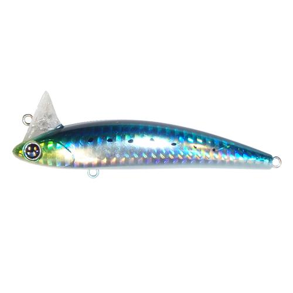
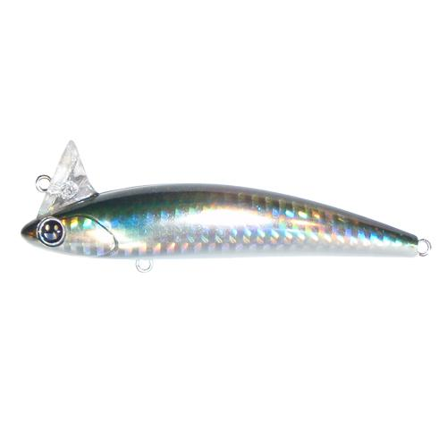
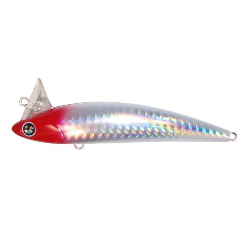
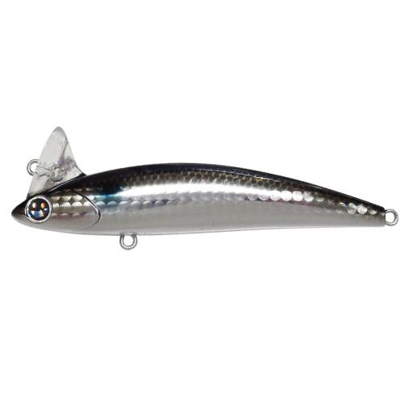

ラビット109
（Rabit 109）
ラビット109（Rabit 109）はNIKO DESIGN OFFICE（ニコデザインオフィス）のシャローミノーです（販売：ハルシオンシステム）。
「ランカー対応3番フック装着のシャローローリングミノー」として、水深の浅い干潟や河川をメインステージに設計された109mmモデル。ウォブリングを一切排除したローリングアクションと、109mmのボディに16.5gのウエイトによる飛距離が持ち味です。

画像出典:ハルシオンシステム公式HP
スペック
- メーカー
- NIKO DESIGN OFFICE（ニコデザインオフィス）
- タイプ
- フローティング
- 全長
- 109mm
- 自重
- 16.5g
- フック
- C'ultiva STBL-46 #3
- アクション
- ローリング
- ターゲット
- シーバス
- 価格
- 2,310円（税込）
▼今すぐチェック
ラビット109の特徴
ウォブリングを排除したローリングで、シャローのランカーシーバスを獲るためのミノー
-
ウォブリングを一切排除したローリングアクション
アクションはラビット90と同じく、ウォブリングを一切排除したローリングアクション。強い波動を嫌うシャローの大型シーバスにも違和感を与えにくい。
-
ランカーを獲るための3番フック
ランカーシーバスを獲るために、フックはST46#3を装着。浅場で掛けた大型魚にも、フックの強度で負けにくい。
-
109mm・16.5gで上のサイズに負けない飛距離
109mmのボディに16.5gのウエイトを入れ、一回り大きいサイズのルアーに負けない飛距離を発揮する。水深のあるエリアでも、表層まで魚を誘い出す力を備えている。
ラビット109の使い方
基本はスロー〜ミディアムのただ巻き。ロッドアクションを入れずに巻くだけで、ローリングアクションでシャローを引いてくる。
干潟では、ブレイクや澪筋に沿ってコースを取り、ゆっくり巻いて浅場に差してくるランカーに見せる。河川では、流れに乗せてドリフト気味に流しながら、ヨレに差し掛かったところで巻きを入れるのが組み立ての基本です。
ラビット109の得意な状況
水深の浅い干潟や河川が主戦場。
浅場に大型のシーバスが差してくる状況や、ウォブリング系のミノーに反応しないスレた魚を狙う場面で強い。飛距離が出るので、広い干潟や河口の沖のブレイクまで届かせたいときにも選びたい1本です。
ワンポイント
ローリングアクションは水を強くかき回さないので、巻きスピードを上げすぎずに「泳ぎが破綻しない範囲でゆっくり」を意識すると持ち味が活きます。
より浅い場所はドシャロー、磯やサーフはシンキングと、同じラビット109の中でモデルを持ち替えると攻略できる範囲が広がります。
ラビット109のモデルの使い分け
| モデル | 全長／自重 | 得意な場面 |
|---|---|---|
| ラビット109 ドシャロー | 109mm／15.0g | アマモの茂った干潟や牡蠣瀬周りなど、通常のミノーでは根掛かりする浅場の水面直下に |
| ラビット109 | 109mm／16.5g | 干潟・河川のシャローのランカー狙いの基本モデル（本記事のモデル） |
| ラビット109 シンキング | 109mm／18.0g | 磯のヒラスズキやサーフのヒラメに。フローティングとのローテーションで |
3モデルとも同じローリングアクション。目の色で見分けられ、シンキングは赤目、ドシャローは青目になっている。水深と根の多さでモデルを選び分けるのがオススメです。
人気カラー
ラビット109は全16色展開。シャローのシーバス狙いでオススメのカラーを厳選して紹介します。

RB-01 イワシイワシ系のナチュラルカラー。澄み潮やデイゲーム、イワシパターンに。

RB-03 イナッコ干潟や河川で群れるイナッコに合わせたナチュラルカラー。

RB-04 ホロ・レッドヘッドホロ入りのレッドヘッド。濁りやナイトゲームでもシルエットを出しやすい。

RL-12 ボラボラを意識したナチュラル系。浅場でボラを捕食している大型シーバスに。
画像出典:ハルシオンシステム公式HP
ラビット109に似ているルアー
-
 ナンバーセブン117F
ポジドライブガレージ
詳細はこちら＞
ナンバーセブン117F
ポジドライブガレージ
詳細はこちら＞
全長117mm・自重13gのシャローランナー。テールを振らない完全なローリングアクションで泳ぐ点がラビット109と共通する。細身のシルエットで、アップストリームの釣りやプレッシャーが高い場面に。
-
 ナンバーセブン117SHO
ポジドライブガレージ
詳細はこちら＞
ナンバーセブン117SHO
ポジドライブガレージ
詳細はこちら＞
全長117mmのヘッドダウンシンキングモデル。シンペンとミノーを融合させた設計で、ラビット109のシャローより下のレンジまで探りたいときに持ち替えたい1本。
-
 コモモSF-125
ima
詳細はこちら＞
コモモSF-125
ima
詳細はこちら＞
全長125mmのシャローランナーの定番。水面直下〜50cm前後を得意とし、干潟や河川のシャローを広く探るサーチベイトとして、ラビット109と使い分けられる。